Not a completed causal map or validated steering operator. Raw data: JSON · CSV.
Follow-up evidence: five-start short-fork replication, edited-state support proxies, location/time controls, and frozen nonlinear interface readouts on 75 validation trajectories. No validated steering operator; confirmation trajectories remain unopened.
Assembled: 2026-09-05T23:13:30.842295+00:00; new coordinate findings are block3-only, not a new all-layer sweep.
Latest Reach finding: readout nonlinearity depends on the coordinate definition; elapsed episode time is readable but is not proof of a native clock. Rank1/2/8 residual candidates are hypotheses, not accepted operators.
Coordinate-transform control: linear_world_then_known_geometry: 6.112mm; direct_goal_aligned_linear: 8.200mm; direct_goal_aligned_rbf: 7.998mm; physical_persistence: 16.364mm. A linear world readout plus known geometry is a competing explanation; hidden nonlinear structure is not ruled out.
Push-T warning: a nonlinear advantage over a weak linear probe is not sufficient; compare the physical-persistence baseline recorded in the JSON. The large fit-versus-validation gap remains unresolved, and no Push-T operator is validated.
Actual action perturbations reveal increasing nonlinear response over imagined time, independently of the coordinate probes. The new spatial plots localize response, not causal importance of individual tokens; only three development scenes were tested.
Residual rank8/pulse1 result: neither signed candidate improved average15-step physical progress beyond its matched sham. Predicted and executed shifts can oppose one another; this is compatible with planner compensation, not proof of that mediation mechanism.
exploratory full99-step development episodes; NOT residual intervention or held efficacy; Final goal distance, minimum goal distance, final success and ever-success are distinct; do not select the favorable endpoint.
| Episode | Arm | Final distance mm | Ever success | Final success | Cap saturation |
|---|---|---|---|---|---|
| 0 | matched_sham | 27.955 | False | False | 41.4% |
| 0 | static_candidate | 25.377 | True | True | 37.8% |
| 0 | unsteered | 33.918 | True | False | 0.0% |
| 1 | matched_sham | 22.380 | True | True | 13.7% |
| 1 | static_candidate | 15.803 | True | True | 13.2% |
| 1 | unsteered | 21.572 | False | False | 0.0% |
| 4 | matched_sham | 70.990 | True | False | 63.7% |
| 4 | static_candidate | 42.206 | True | False | 59.9% |
| 4 | unsteered | 49.398 | True | False | 0.0% |
| 7 | matched_sham | 210.669 | False | False | 85.9% |
| 7 | static_candidate | 204.777 | False | False | 85.3% |
| 7 | unsteered | 134.221 | False | False | 0.0% |
| 10 | matched_sham | 55.643 | True | False | 36.1% |
| 10 | static_candidate | 50.577 | False | False | 34.9% |
| 10 | unsteered | 60.112 | True | False | 0.0% |
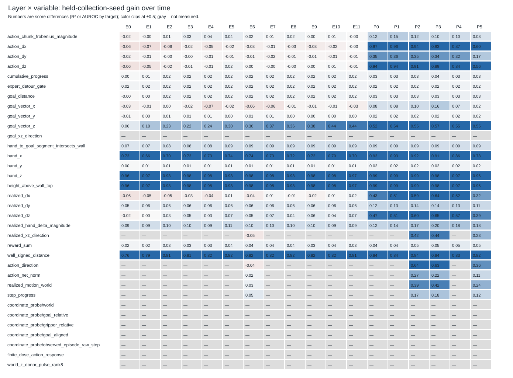
Evidence: geometry_map.json rows[].linear_score

Evidence: geometry_map.json rows[].spatial_decodability

Evidence: geometry_map.json realized_xz_direction rows[].direction_magnitude_curve; original consistently masked report

Evidence: geometry_map.json sites.*.eigenspectrum
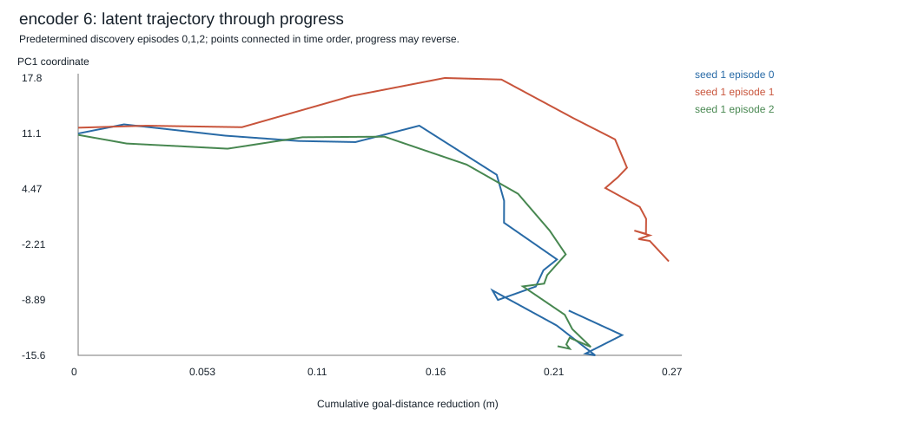
Evidence: geometry_map.json sites.encoder.block6.pca_trajectories

Evidence: geometry_map.json sites.predictor.block2.pca_trajectories

Evidence: geometry_map.json sites.predictor.block3.pca_trajectories
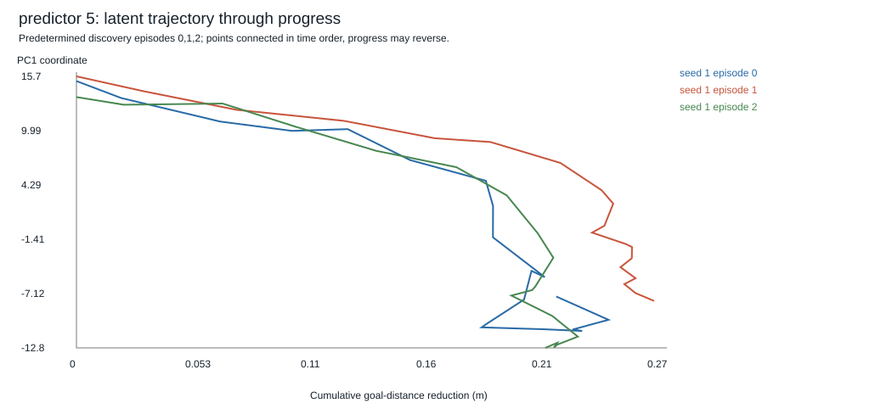
Evidence: geometry_map.json sites.predictor.block5.pca_trajectories

Evidence: geometry_map.json sites.*.subspace_comparisons

Evidence: geometry_map.json causal_measurements.timelines[].latent_l2_change_mean_per_candidate

Evidence: geometry_map.json causal_measurements.timelines[].decoded_displacement_change_mean_norm

Evidence: geometry_map.json causal_measurements.rows[].realized.displacement_xyz
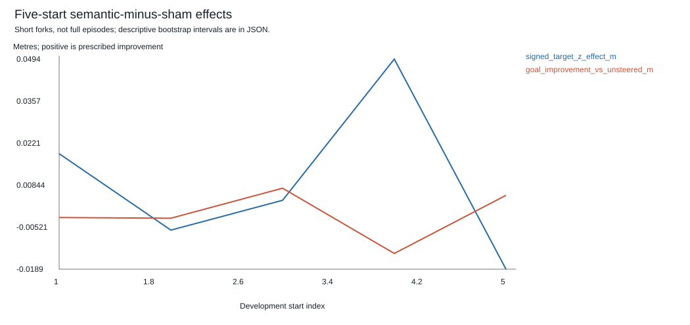
Evidence: followups.replication.combined_directions_semantic_minus_sham
Evidence: followups.specificity.rows
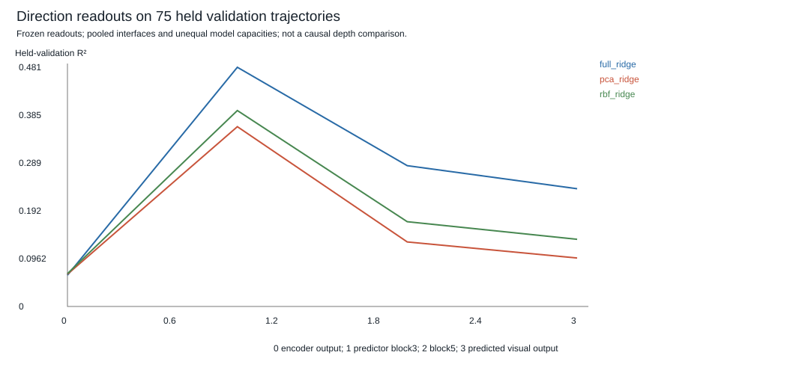
Evidence: followups.nonlinear_interfaces.rows[].held_validation

Evidence: followups.interface_response.rows
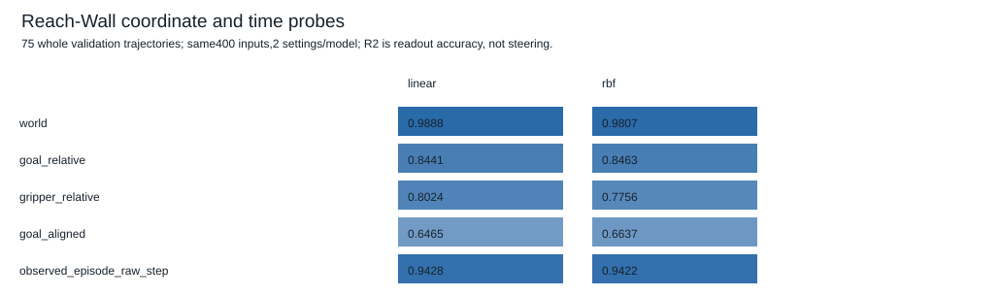
Evidence: followups.coordinate_time.validation
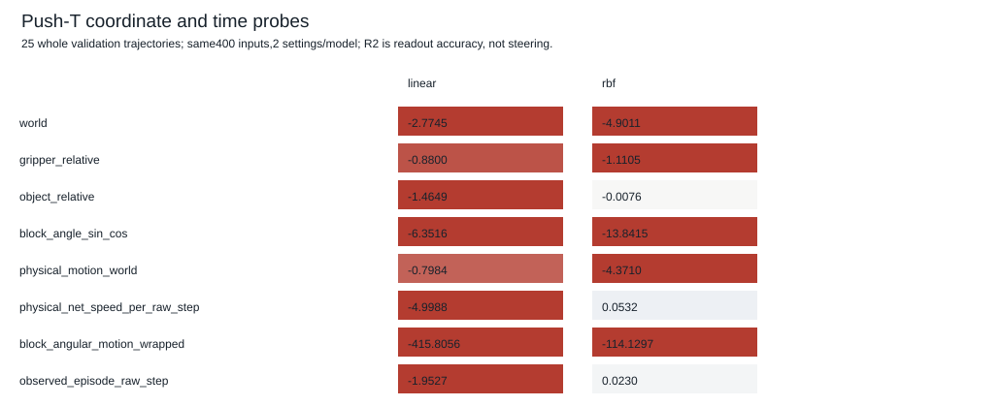
Evidence: followups.pusht_coordinate_time.validation
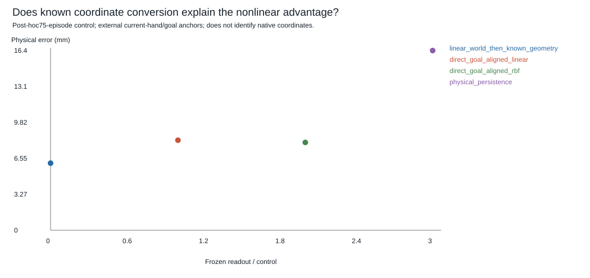
Evidence: followups.transform_null.rmse_m
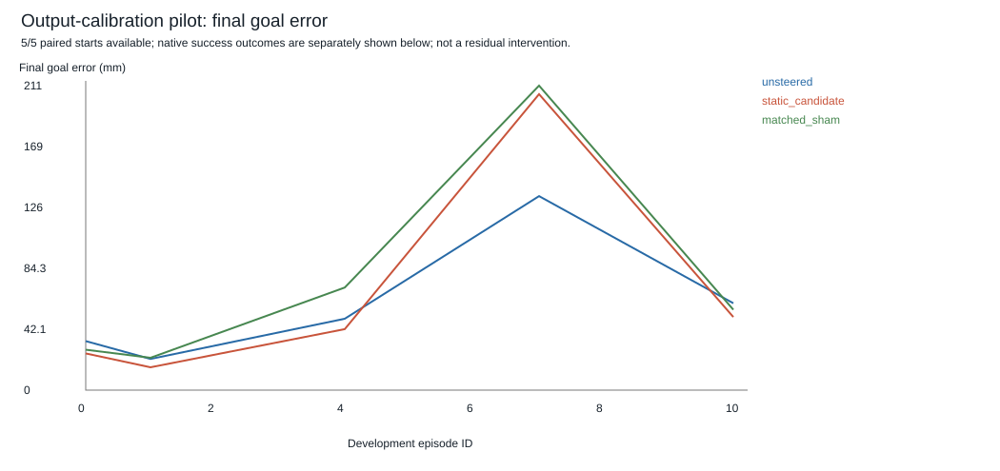
Evidence: followups.coordinate_pilot.rows
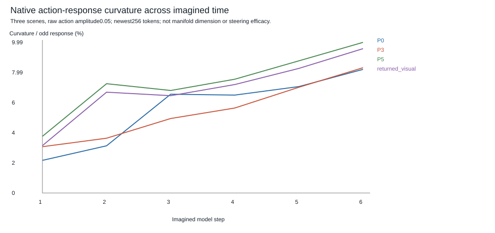
Evidence: followups.action_interactions.group_rows
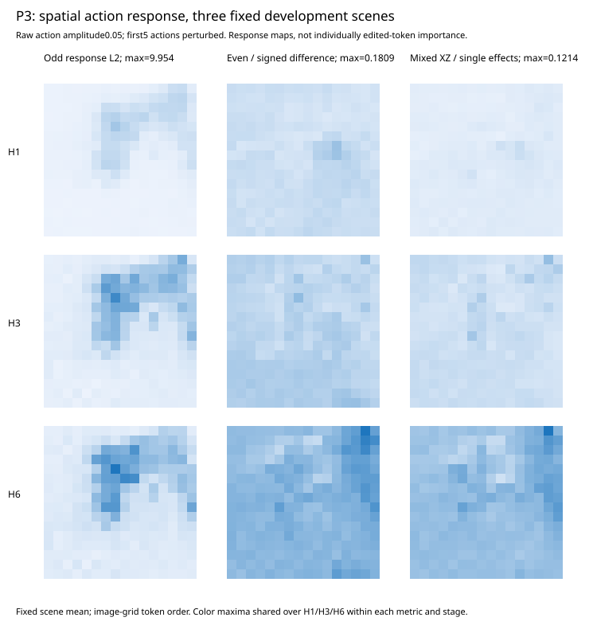
Evidence: followups.token_time.rows; token response, not individual-token causality
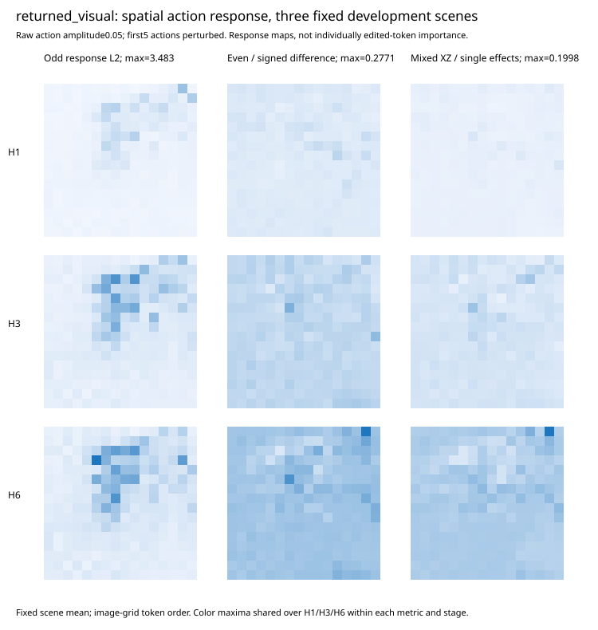
Evidence: followups.token_time.rows; token response, not individual-token causality
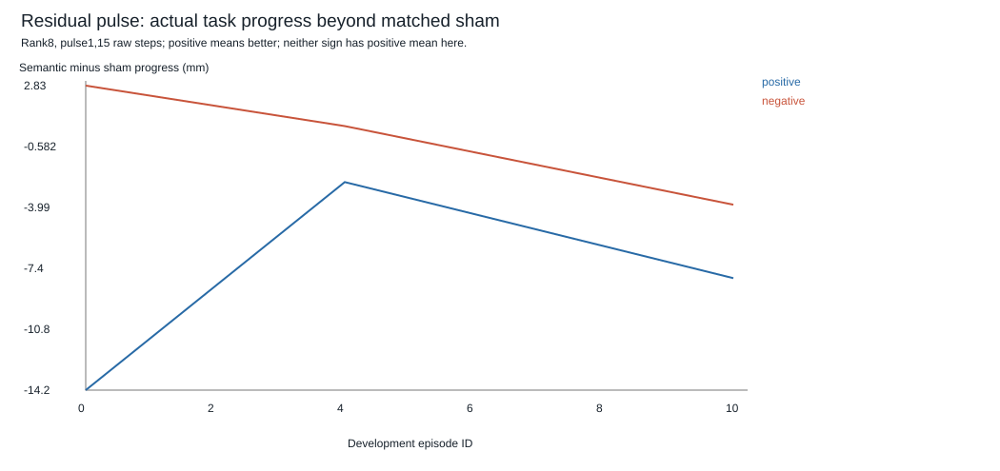
Evidence: followups.residual_physical.paired_contrasts